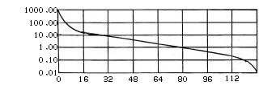

Control Change Message
MIDIの各チャンネルを制御する為のメッセージです。
Program（Sound, Voice Tone, Preset, Patch）のバンクを選択するメッセージです。
このメッセージの送信後、
プログラム・チェンジ・メッセージを送信する事で、
選択したバンクのプログラムの音色を鳴らすことが出来ます。
バンクセレクトでは音色は変わらず、その後に
プログラム・チェンジ・メッセージが必要です。
General MIDI Level.2(GM2)では、
バンク$78/$00が指定されその後にプログラム・チェンジする事でリズム・チャンネルになります。
又、バンク$79/xxが指定されその後にプログラム・チェンジする事でメロディー・チャンネルになります。
サクラの@命令及びvoice()命令は、バンクセレクトを指定してからプログラム・チェンジを指定する仕様になっています。
従って、ユーザーが特に意識する必要はありません。
命令一覧 (Sakura標準命令)
- @Program No.[,Bank LSB,Bank MSB]
- Voice(Program No.[,Bank LSB,Bank MSB])
- 音色(Program No.[,Bank LSB,Bank MSB])
ビブラート(音程LFO)の深さを変化させます。
最大値を指定したときのビブラートの深さは、
Registered Paramete No.5の
Modlation Depthで指定します。
指定値と深さはcent単位で比例します。
命令一覧 (Sakura標準命令)
- M(Depth)
- Modulation(Depth)
- ビブラート
- ビブラートオフ
ポルタメント時のピッチの変化の早さを指定します。
General MIDI Level.2(GM2)では、モノ・モード（モード４）の時に使用する事ができます。
また、ポリ・モード（モード３）の時でも、使用できる楽器もあります。
General MIDI Level.2(GM2)では、指定値によるピッチの変化のレートは、以下の表の通りとする事が推奨されています。
縦軸は変化のスピード（単位[cent/msec]）で、横軸は指定値です。

命令一覧 (Sakura標準命令)
- PT(Time)
- PortamentoTime(Time)
チャンネルの音量を変化させるメッセージで、各チャンネル間との音量バランスを設定する目的として使われます。
音量の式は、以下のとおりです。
gain [dB] = 40 × log（
指定値 ÷ 127 ）
命令一覧 (Sakura標準命令)
- V(Volume)
- MainVolume(Volume)
チャンネルのステレオの音場位置を設定します。
リズムチャンネルの場合は、相対的に変化します。
リズムチャンネルの各パーカッションの音場を設定する為には、
Universal Real Time Exclusive Messageの
Key-Based Instrument Controllers(Sub ID#1=$0A)を使用します。
General MIDI Level.2(GM2)で推奨される、左右の音量の計算式は以下の通りです。
Gain(Left) [dB] = 20 × log（ cos（ π ÷ 2 × max（ 0,
指定値 − 1 ） ÷ 126 ） ）
Gain(Right) [dB] = 20 × log（ sin（ π ÷ 2 × max（ 0,
指定値 − 1 ） ÷ 126 ） ）
命令一覧 (Sakura標準命令)
- P(Panpot)
- Panpot(Panpot)
- 方向左
- 方向左前
- 方向前
- 方向右前
- 方向右
- 方向回す
チャンネルの音量を変化させるメッセージで、
クレッシェンド、デクレッシェンド等の音楽表現を行う為に使用されます。
音量の式は、以下のとおりです。
gain [dB] = 40 × log（
指定値 ÷ 127 ）
命令一覧 (Sakura標準命令)
- EP(Volume)
- Expression(Volume)
- Cresc([[[len], v1], v2])
- Decresc([[[len], v1], v2])
- 大きく(len, v2)
- 小さく(len, v2)
- クレッシェンド(len, v2)
- デクレッシェンド(len, v2)
- 音量戻す
ハーフペダルを導入しない場合は、0〜63がOff,64〜127がOnとします。
このメッセージは、ダンパーペダル（若しくは、サスティンペダル）のOn/Offをします。
General MIDI Level.2(GM2)のピアノ系の音色では、リダンパーに対応しています。
命令一覧 (Sakura標準命令)
指定値は、0〜63がOff,64〜127がOnとなります。
このメッセージは、ポルタメントのOn/Offを指定します。
ポルタメントがOnの状態では、全てのノート・オンされた音について、
ポルタメントコントローラーにて指定されたノートNo.の音程から
ノートオンした音程まで、ポルタメントタイムで指定した速度でポルタメントします。
命令一覧 (Sakura標準命令)
- PS(switch)
- PortamentoSwitch(switch)
指定値は、0〜63がOff,64〜127がOnとなります。
ダンパーペダルの効果と似ているが、このメッセージは、
Onになったときにノートオンされていた音のみを保持します。
命令一覧
指定値は、0〜63がOff,64〜127がOnとなります。
このメッセージは、発音する音を柔らかくする為に用います。
具体的には、音量を小さくし、カットオフ周波数を下げる等の操作がMIDI内部で行われます。
General MIDI Level.2(GM2)では、ピアノ系の音色のみの対応が義務つけられています。
命令一覧
ローパスフィルタのレゾナンスの強さを指定します。
64を標準とし、値が小さい程効果が弱くなり、大きいほど効果が大きくなります。
命令一覧
エンベロープのリリースタイムを指定します。
64を標準とし、値が小さい程効果が短くなり、大きいほど効果が長くなります。
命令一覧
エンベロープのアタックタイムを指定します。
64を標準とし、値が小さい程効果が短くなり、大きいほど効果が長くなります。
命令一覧
ローパスフィルタのカットオフ周波数を指定します。
64を標準とし、値が小さい程周波数が低くなり、大きいほど周波数が高くなります。
命令一覧
エンベロープのディケイタイムを指定します。
64を標準とし、値が小さい程効果が短くなり、大きいほど効果が長くなります。
命令一覧
ビブラートの周期を指定します。
64を標準とし、値が小さい程周期が長くなり、大きいほど周期が短くなります。
命令一覧
ビブラートの深さを指定します。
64を標準とし、値が小さい程効果が弱くなり、大きいほど効果が大きくなります。
命令一覧
ビブラートのディケイタイムを指定します。
64を標準とし、値が小さい程効果が短くなり、大きいほど効果が長くなります。
命令一覧
リバーブへのセンド・レベルを設定します。
指定値とセンド・レベルは比例関係です。
細かいを設定する為には、
Universal Real Time Exclusive Messageの
Device Control(Sub ID#1=$04)を使用します。
命令一覧 (Sakura標準命令)
指定値とセンド・レベルは比例関係で、127の時に100%となります。
細かいを設定する為には、
Universal Real Time Exclusive Messageの
Device Control(Sub ID#1=$04)を使用します。
命令一覧 (Sakura標準命令)
各MIDIデバイス個別に規定されている各パラメータの設定を行います。
このパラメータは、各メーカが独自に設計する為、各MIDIデバイスで互換性が無い場合があります。
パラメータを設定する方法は、
Non Registered Parameter LSB(cc98)及び、Non Registered Parameter MSB(cc99)を指定し、
Data Entry MSB(cc6)及び、Data Entry LSB(cc38)を送信する事で可能です。
又、Data Increment(cc96)及びData Decrement(cc97)にて、MSB単位で値のインクリメント(+1)及びデクリメント(-1)する事が可能です。
この２つのコントロールは、第2Byteは意味を持ちません。
命令一覧 (Sakura標準命令)
- NRPN(NoMSB, NoLSB, DataMSB)
- DataMSB(DataMSB)
- DataLSB(DataLSB)
- Y(DataMSB)
MIDI規格によって標準化されている、全てのMIDIデバイスに共通する各パラメータの設定を行います。
パラメータを設定する方法は、
Registered Parameter LSB(cc100)及び、Registered Parameter MSB(cc101)を指定し、
Data Entry MSB(cc6)及び、Data Entry LSB(cc38)を送信する事で可能です。
又、Data Increment(cc96)及びData Decrement(cc97)にて、MSB単位で値のインクリメント(+1)及びデクリメント(-1)する事が可能です。
この２つのコントロールは、第2Byteは意味を持ちません。
命令一覧 (Sakura標準命令)
- RPN(NoMSB, NoLSB, DataMSB)
- DataMSB(DataMSB)
- DataLSB(DataLSB)
- Y(DataMSB)
現在、MIDI規格にて標準化されているパラメータは以下のとおりです。
Registered Parameter
| Parameter | MSB | LSB | GM1 | GM2 | Command | Define |
|---|
| Pitch Bend Sensitivity | 0 | 0 | ○ | ○ |
PitchBendSensitivity
BR | stdmsg.h |
| Fine Tuning | 0 | 1 | × | ○ |
FineTune | stdmsg.h |
| Corse Tuing | 0 | 2 | × | ○ |
CoarseTune | stdmsg.h |
| Tuning Preset | 0 | 3 | × | × |
No Defined | No Defined |
| Tuning Bank | 0 | 4 | × | × |
No Defined | No Defined |
| Modlation Depth | 0 | 5 | × | ○ |
No Defined | No Defined |
| Null | 127 | 127 | ○ | ○ |
No Defined | No Defined |
Pitch Bend Change Messageでの感度の量を指定します。
Data EntryのMSBが半音単位、LSBがcent単位となります。
General MIDI Level.1及び2(GM1,GM2)では、±12以上の対応が義務つけられています。
命令一覧 ("stdmsg.h"にて定義されています。)
- PitchBendSensitivity(ValueMSB)
- BR(ValueMSB)
チャンネルのチューニングを、細かいレベルで設定します。
MSB=$40, LSB=$00で中央となり、100/8192[cent]単位で調整可能です。
命令一覧 ("stdmsg.h"にて定義されています。)
チャンネルのチューニングを、粗いレベルで設定します。
LSBは無効で、MSB=$40で中央となります。半音単位で調整可能です。
General MIDI Level.2(GM2)では、±12以上の対応が義務つけられています。
キーシフトとしても利用可能です。
命令一覧 ("stdmsg.h"にて定義されています。)
チューニング・プログラムのPreset No及びBank No.を指定します。
チューニング・プログラムについての詳細は、
MIDI Tuning Standardを参照して下さい。
Modlation(Control Change No.1)で最大値が指定されたときビブラートの深さを設定します。
Data EntryのMSBが半音単位、LSBがcent単位となります。
General MIDI Level.1及び2(GM1,GM2)では、±12以上の対応が義務つけられています。
$7F/ $7F：Null
Data Entryで指定された値は無視されます。